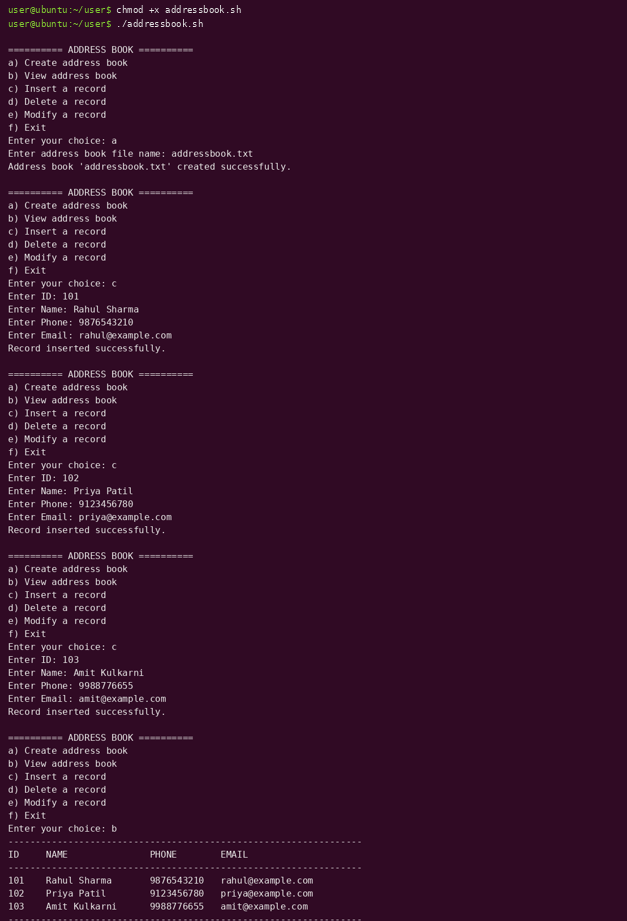

Practical 1
Address Book using Shell Script
Theory
This practical builds a small menu-driven address book using a shell script. Each contact is stored as one line in a plain text file.
Key concepts
- Shell – a program (here
bash) that reads commands typed by the user or from a file and asks the operating system to run them. - Shell script – a text file containing shell commands. The first line
#!/bin/bash(the shebang) tells the system which interpreter should run it. Make it executable withchmod +x. - Functions –
create_book,view_book,insert_record,delete_recordandmodify_recordeach handle one menu option, keeping the script organised. read -p– prints a prompt and stores what the user types in a variable.case … esac– chooses which function to run depending on the menu letter entered.${ch,,}converts the choice to lower case.- Redirection –
>overwrites a file (: > "$FILE"creates an empty one) and>>appends a new line to it.
Tools used for the records
grep– searches for a pattern.grep -q "^$id|"checks silently whether a line starts with the given ID;grep -vprints all lines that do not match, which is how a record is deleted.awk– processes text field by field. With-F'|'the|character separates the fields (ID, name, phone, email). It is used both to print the table and to rewrite one record when modifying.mv– replaces the address book with the edited temporary file.
Record format
One contact per line: ID|Name|Phone|Email. The ID acts like a primary key – the script refuses to insert a duplicate ID.
Code
#!/bin/bash
# Practical 1 : Address Book (Shell Script)
FILE=""
check_file() {
if [ -z "$FILE" ] || [ ! -f "$FILE" ]; then
echo "Address book not created yet. Choose option (a) first."
return 1
fi
}
create_book() {
read -p "Enter address book file name: " FILE
: > "$FILE"
echo "Address book '$FILE' created successfully."
}
view_book() {
check_file || return
if [ ! -s "$FILE" ]; then
echo "Address book is empty."
return
fi
echo "-----------------------------------------------------------------"
printf "%-6s %-18s %-12s %-26s\n" "ID" "NAME" "PHONE" "EMAIL"
echo "-----------------------------------------------------------------"
awk -F'|' '{printf "%-6s %-18s %-12s %-26s\n", $1, $2, $3, $4}' "$FILE"
echo "-----------------------------------------------------------------"
}
insert_record() {
check_file || return
read -p "Enter ID: " id
if grep -q "^$id|" "$FILE"; then
echo "Record with ID $id already exists."
return
fi
read -p "Enter Name: " name
read -p "Enter Phone: " phone
read -p "Enter Email: " email
echo "$id|$name|$phone|$email" >> "$FILE"
echo "Record inserted successfully."
}
delete_record() {
check_file || return
read -p "Enter ID to delete: " id
if grep -q "^$id|" "$FILE"; then
grep -v "^$id|" "$FILE" > temp.txt
mv temp.txt "$FILE"
echo "Record deleted successfully."
else
echo "Record with ID $id not found."
fi
}
modify_record() {
check_file || return
read -p "Enter ID to modify: " id
if grep -q "^$id|" "$FILE"; then
read -p "Enter new Name: " name
read -p "Enter new Phone: " phone
read -p "Enter new Email: " email
awk -F'|' -v OFS='|' -v id="$id" -v n="$name" -v p="$phone" -v e="$email" \
'$1==id {$2=n; $3=p; $4=e} 1' "$FILE" > temp.txt
mv temp.txt "$FILE"
echo "Record modified successfully."
else
echo "Record with ID $id not found."
fi
}
while true; do
echo
echo "========== ADDRESS BOOK =========="
echo "a) Create address book"
echo "b) View address book"
echo "c) Insert a record"
echo "d) Delete a record"
echo "e) Modify a record"
echo "f) Exit"
read -p "Enter your choice: " ch
case "${ch,,}" in
a) create_book ;;
b) view_book ;;
c) insert_record ;;
d) delete_record ;;
e) modify_record ;;
f) echo "Exiting..."; exit 0 ;;
*) echo "Invalid choice. Try again." ;;
esac
done
Output

Tap or click the screenshot to open it full size.